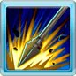

CD:6
•防禦力下降15%(片面)
•火屬性防禦力下降20%
•弱体耐性下降10%

CD:5
•爆擊率上升(70%機率1.3倍傷害/3T)
•攻擊力+10%(累積/最大50%)
•奧義值+10%
CD:9
ジャンヌダルク(リミテッド)
基本資訊
| 定位 | 攻擊 |
| 得意武器 | 劍/槍 |
| 種族 | |
| CV | 潘めぐみ |
立繪
上限解放前||上限解放後
奧義
| ソヴァール･ド･ブリエ | |
| 發動一次2技() 火照Lv-1 |
主動技能
|  CD:6 |
セイクリッド･リヴァーサル |
| 敵方單體火屬性傷害，並賦予目標以下效果 •防禦力下降15%(片面) •火屬性防禦力下降20% •弱体耐性下降10% |
|
CD:5 |
サンクティファイ |
| 賦予我方全體火屬性角色以下效果 •爆擊率上升(70%機率1.3倍傷害/3T) •攻擊力+10%(累積/最大50%) •奧義值+10% |
|
CD:9 |
エターナル･ディヴァイン |
被動技能
 |
ドレス･ラ･ピュセル |
|
聖布の乙女 |